先把人安全送上去
火箭、飞船、逃逸系统和地面支持，决定了任务能不能开始。
从一次载人发射出发，沿着“送上去、住下来、做任务、平安回来”四条主线，理解太空生活到底是怎样被设计出来的。
支持键盘翻页与章节跳转，可按章节顺序完整浏览。
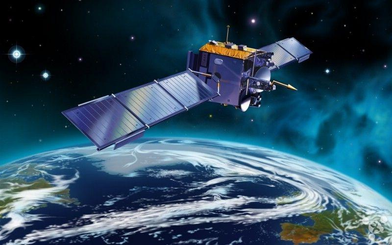
太空生活的本质，不是浪漫漂浮，而是把日常的“吃住行和健康”全部重做一遍。
从火箭起飞到返回回收，载人航天把人体适应、生命保障、在轨任务和地面支持连接成一条完整链路。
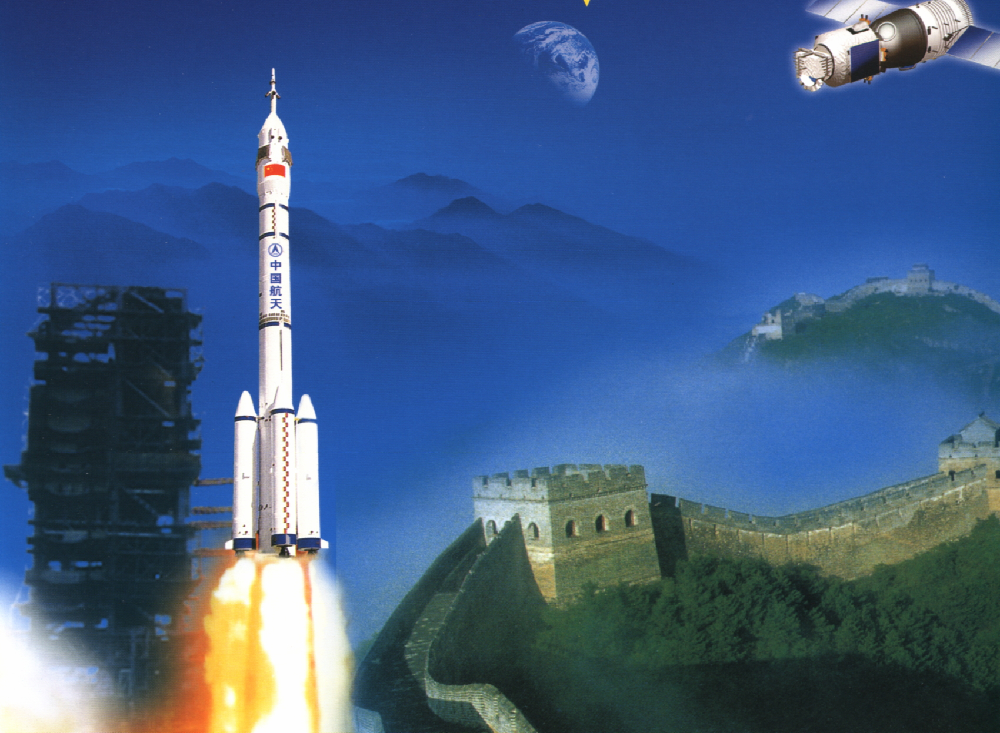
载人航天不是“飞上去”那么简单，而是一整套极端环境中的系统工程。把任务拆开之后，可以看到它同时涉及历史积累、工程能力、人体适应和团队协同。
火箭、飞船、逃逸系统和地面支持，决定了任务能不能开始。
任务起点上天前必须把风险尽可能消灭在地面，把动作练成条件反射。
训练体系吃饭、喝水、睡觉、如厕、锻炼，在微重力下都不再是地面版本。
在轨生活科学实验、站务维护、出舱准备、天地协同，决定这趟飞行的价值。
任务执行再入大气层、开伞减速、着陆回收，以及重新适应地球重力。
返回恢复从火箭起源到空间站时代，再到航天精神的形成，看到这条道路如何延展。
历史与精神运载火箭负责推力，逃逸系统负责最坏情况下的“兜底”。
飞船和空间站要提供氧气、水、热控、电力、通信与基本居住条件。
科学实验、设备维护、出舱作业和数据回传，都是任务价值所在。
返回舱、防热、降落伞和回收系统共同构成最后一道关键链路。
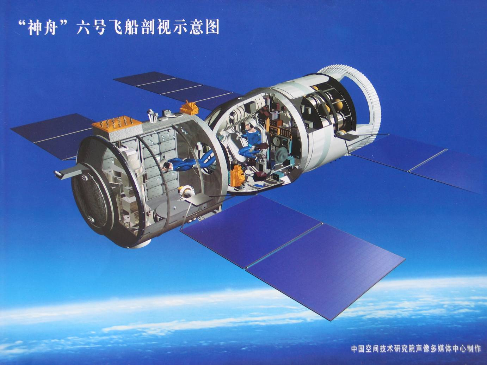
宇航员要理解设备、看懂流程、执行实验，专业基础决定理解上限。
火箭发射、长期在轨、再入着陆，对心肺、前庭和平衡系统都有挑战。
密闭空间里最怕情绪失控，真正重要的是能不能在压力下持续稳定工作。
在轨任务没有“单打独斗”，每一次操作都需要与同伴和地面形成闭环。
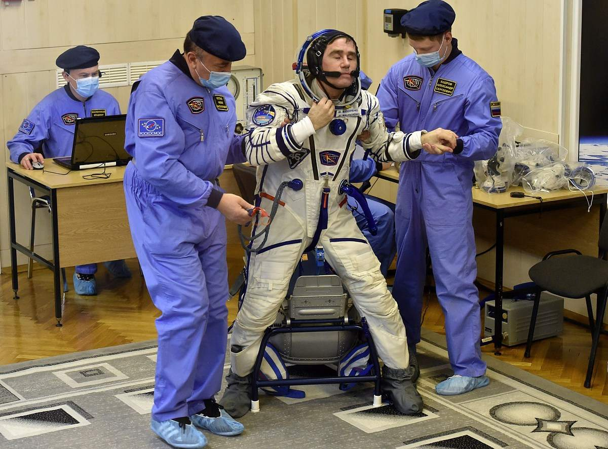
舱外服与设备训练：宇航员不仅要会穿、会用，还要把每一个动作练到“几乎不用思考”。
座椅与发射适应：发射和返回都伴随强加速度，姿态、呼吸和操作要提前适应。
失重环境熟悉：真正上站前，必须先理解身体和物体在失重中的反应方式。
应急预案演练：火灾、失压、设备故障、医疗急救，都要先练成流程再上天。
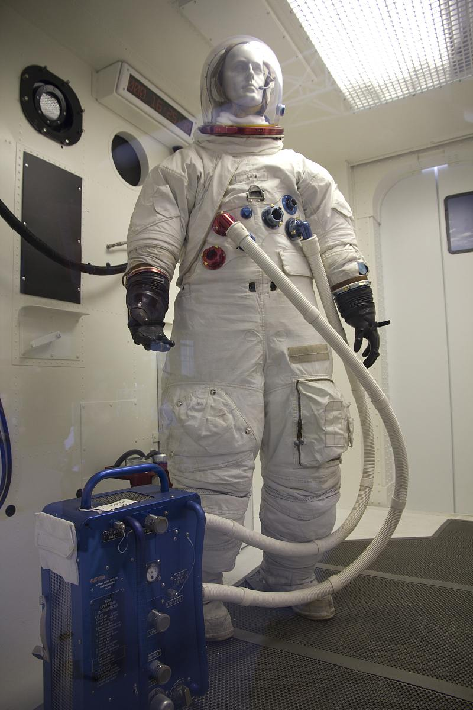
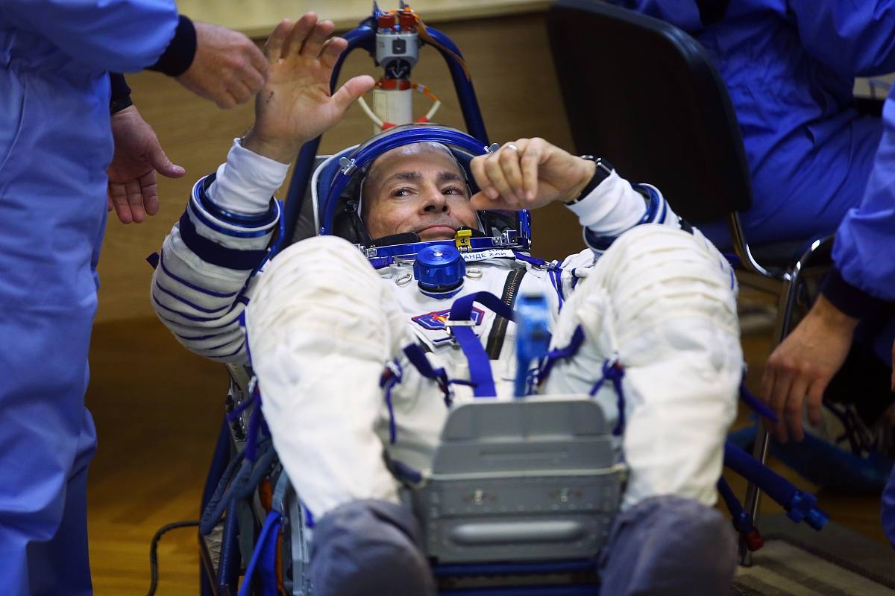
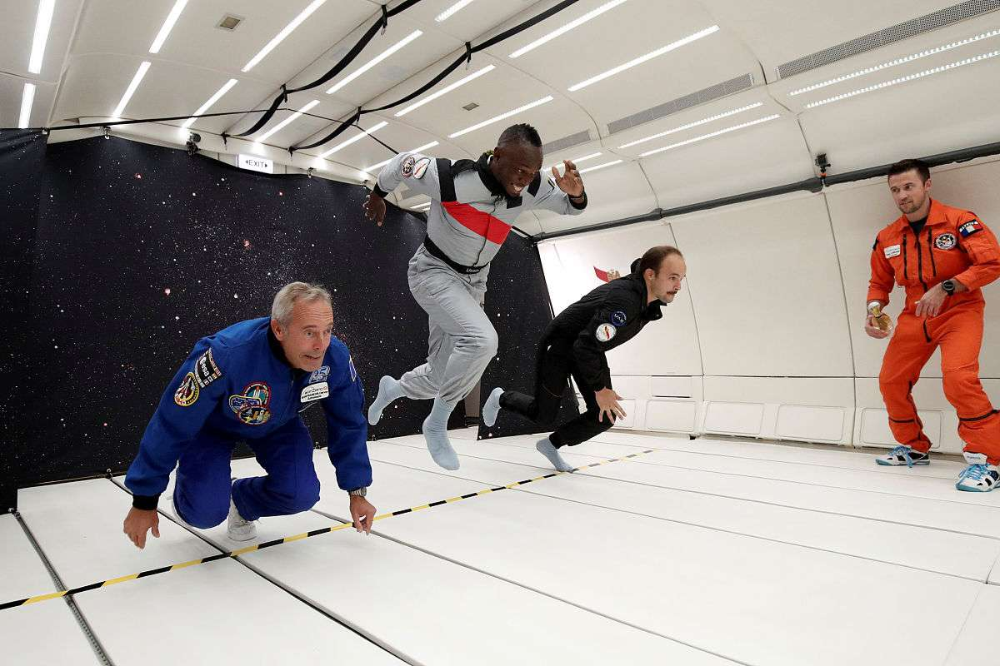
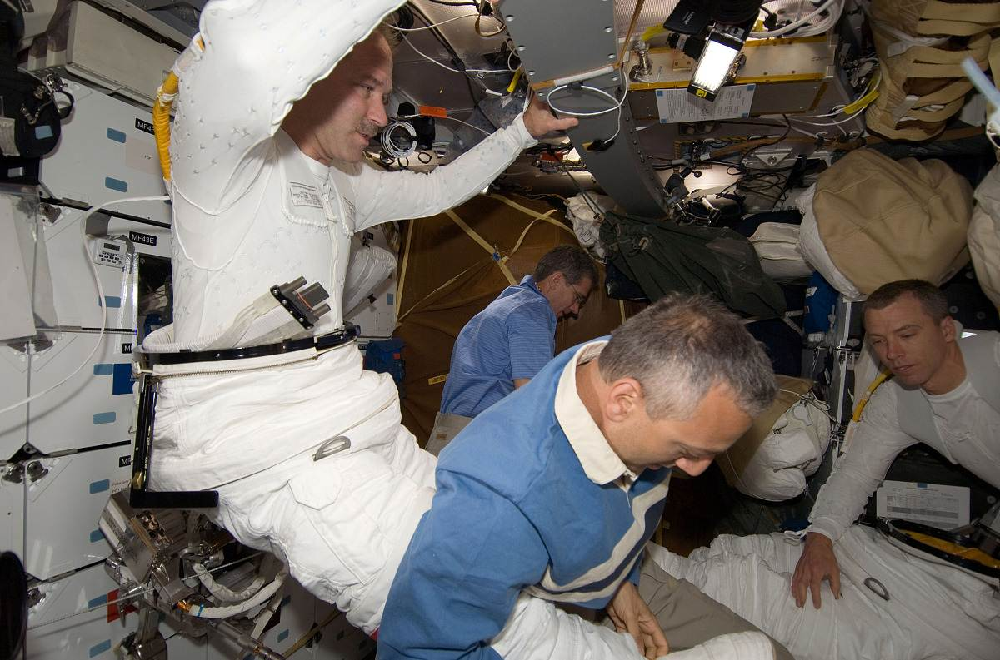
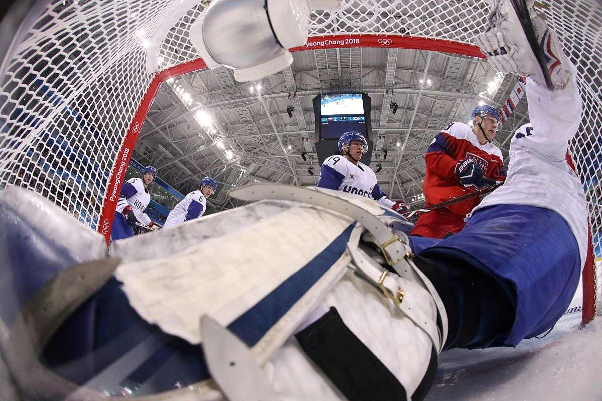
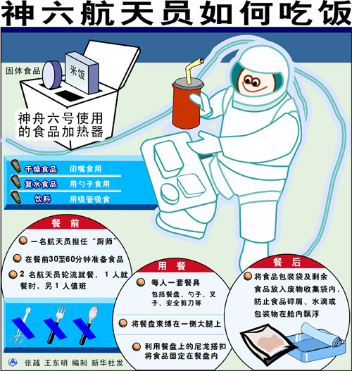
因为在轨储运和处理空间有限，复水食品比“现场烹饪”更可控。
宇航员不是厨师，太空餐的设计重点是快速、安全、少失误。
高强度任务和失重环境下，能量、蛋白质、微量元素都不能随意波动。
任务周期越长，食物的口味、熟悉感和仪式感越重要。
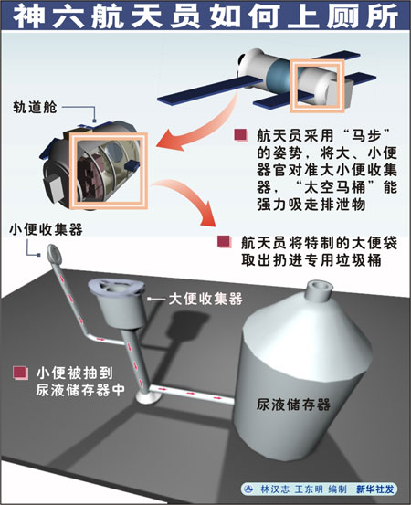
发射、在轨工作和返回后的恢复，都要求航天员保持基础耐力。
失重意味着“身体不用托着自己”，久而久之肌肉和骨量都会下降。
在狭小舱内工作，动作控制和关节状态都要保持在稳定区间。
长期封闭环境里，运动能帮助恢复节律，减轻疲劳和心理压力。
在太空里，运动不是加分项，而是维持工作能力和返回能力的生命线。
失重减少了肌肉和骨骼承受的机械刺激，因此必须通过制度化训练，把地面环境中天然存在的负荷补回来。
失重会让体液向上半身重新分布，人的感觉与地面完全不同。
长期失去负重刺激，肌肉会萎缩，骨量会流失，这也是为何锻炼要制度化。
空间定向、平衡感和视觉体验都要重新适应，返回地球后也需要恢复时间。
辐射监测、防护材料和任务窗口选择，都是长期在轨绕不开的问题。
航天员既要执行技术任务，也要管理自己的情绪和团队关系。
先看身体、看任务计划、看设备状态，一天从检查开始。
执行当天的实验方案、站务维护和设备切换。
和地面团队对表、汇报问题、更新后续步骤。
把样品、工具和记录重新固定，避免下一轮任务受影响。
再忙也要挪出专门时间运动，这属于必须完成的任务。
睡眠并不是“放空”，而是为第二天继续高强度任务做准备。
微重力条件下，一些流体、材料和生命现象与地面完全不同。
滤芯、电路、计算设备、机柜和接口都要定期检查和更换。
货物上行、样品回收、垃圾处理，都在空间受限条件下进行。
地面控制、科研团队和工程团队始终在线，形成完整的任务闭环。
地面很多现象总被对流和沉降掩盖，而在轨道上能看到更纯粹的物理过程。
材料形成过程对重力很敏感，轨道环境能提供不同的生长与分层条件。
宇航员如何适应失重，也反过来帮助我们理解人体机制和地面医学问题。
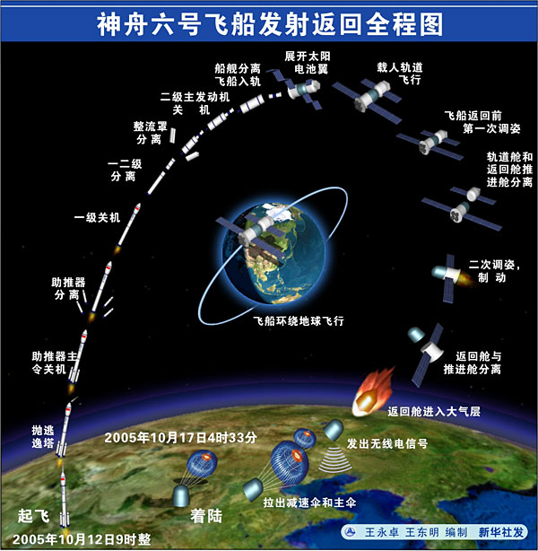
撤离与准备：整理样品和设备，进入返回状态，确认返回舱工作正常。
分离与再入：服务舱分离后，返回舱按预定姿态切入大气层。
高热与黑障：再入阶段既要承受极高热流，也要经历短时通信受限。
开伞与着陆：速度要多级减下来，着陆后还要迅速展开回收和医学检查。
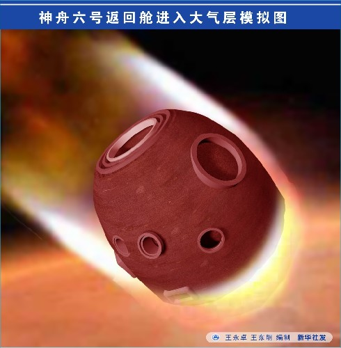
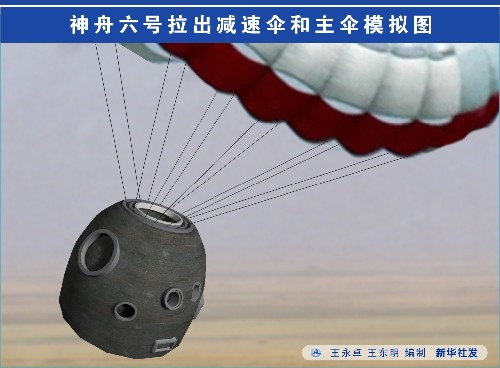
大气再入时的热环境极端，防热结构和材料设计是保命底线。
返回姿态一旦偏差过大，热流分布和减速过程都会变得危险。
不是一把伞解决全部问题，而是一套次序严密的减速逻辑。
地面搜救和医学保障必须迅速跟上，把“安全返回”真正闭环完成。
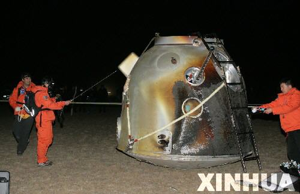
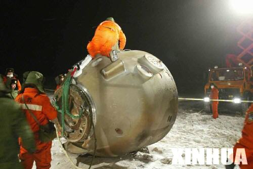
古代火箭解决了“喷气推进”的原始想象，现代液体火箭才真正打开了航天时代的大门。
第一颗人造卫星进入轨道，意味着人类开始具备稳定抵达太空的能力。
从加加林进入太空，到登月成功，航天史开始同时面对人体适应与工程控制两条难线。
真正的成熟不是飞一次，而是能够长期运营、持续补给、稳定执行实验并安全返回。
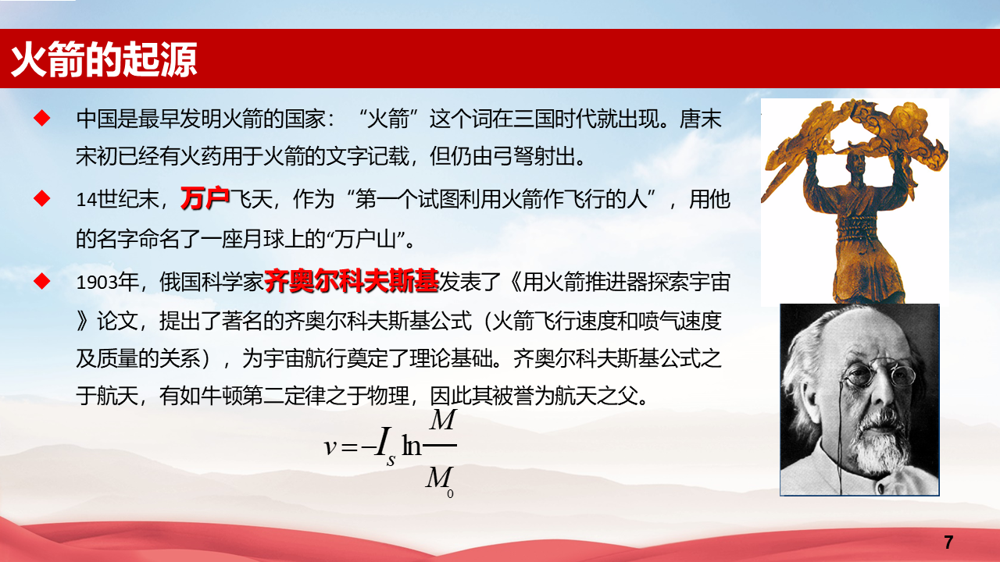
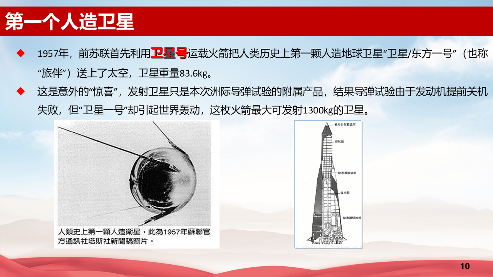
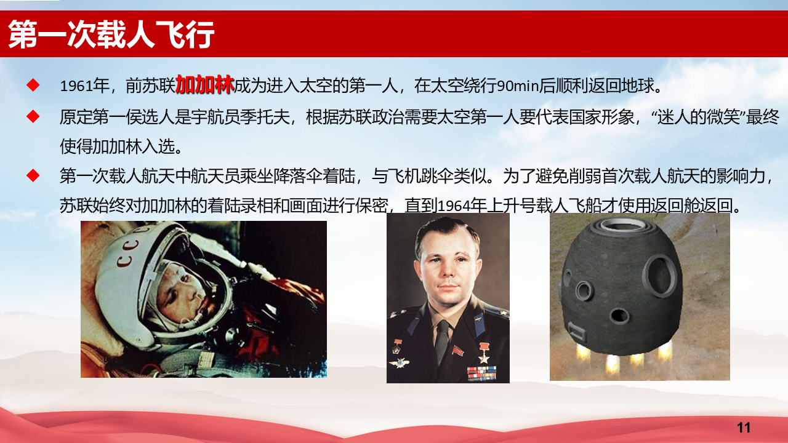
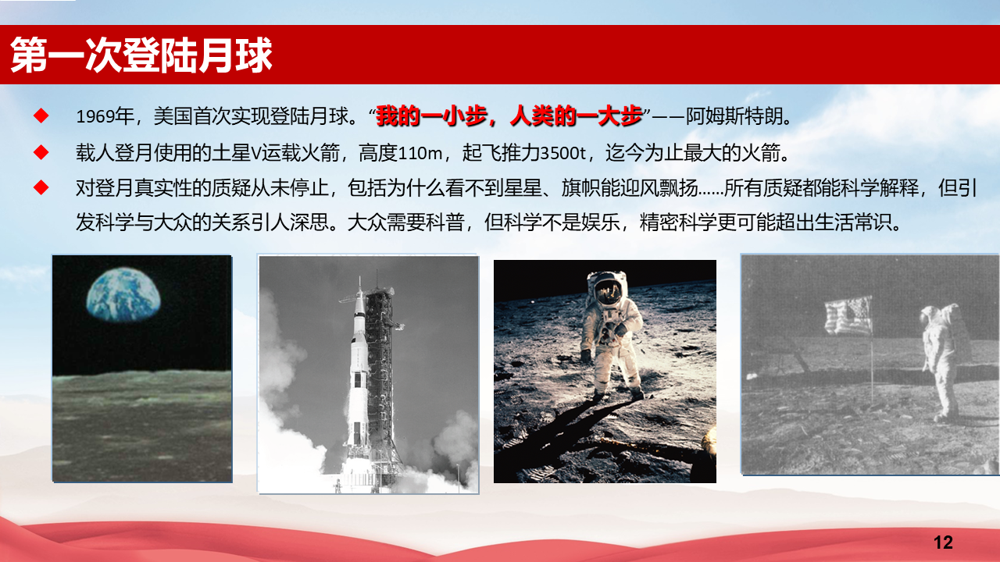
中国第一颗人造卫星发射成功，航天工程迈出标志性一步。
首次载人飞行成功，独立开展载人航天能力形成。
首次空间出舱活动，把任务推进到“在轨作业”。
首次载人交会对接成功，组合体运行取得关键突破。
天和、问天、梦天形成基本构型，长期在轨平台落地。
轮换、补给、出舱和实验任务进入稳定阶段。
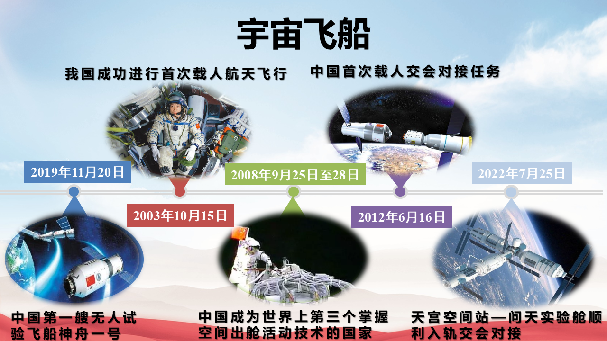
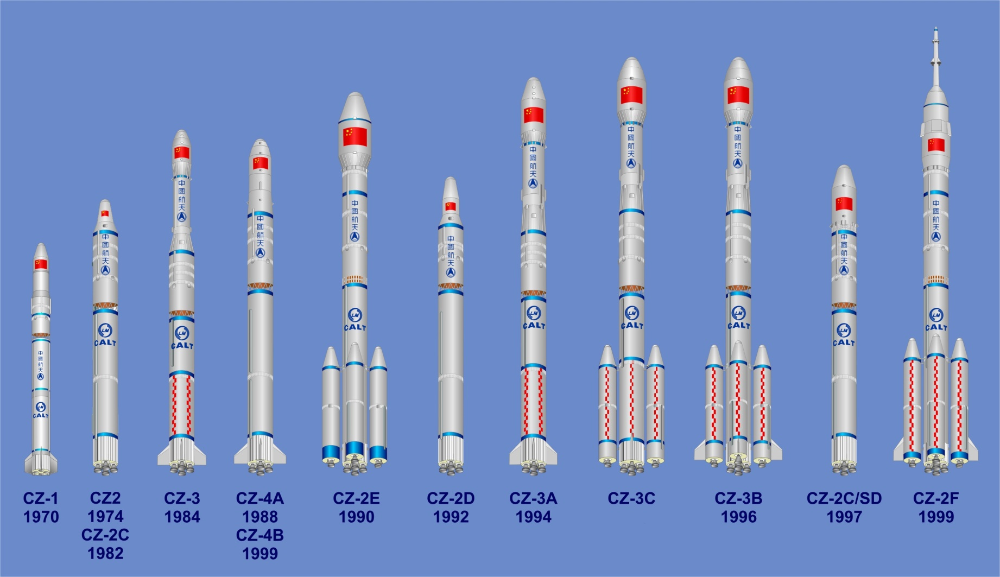
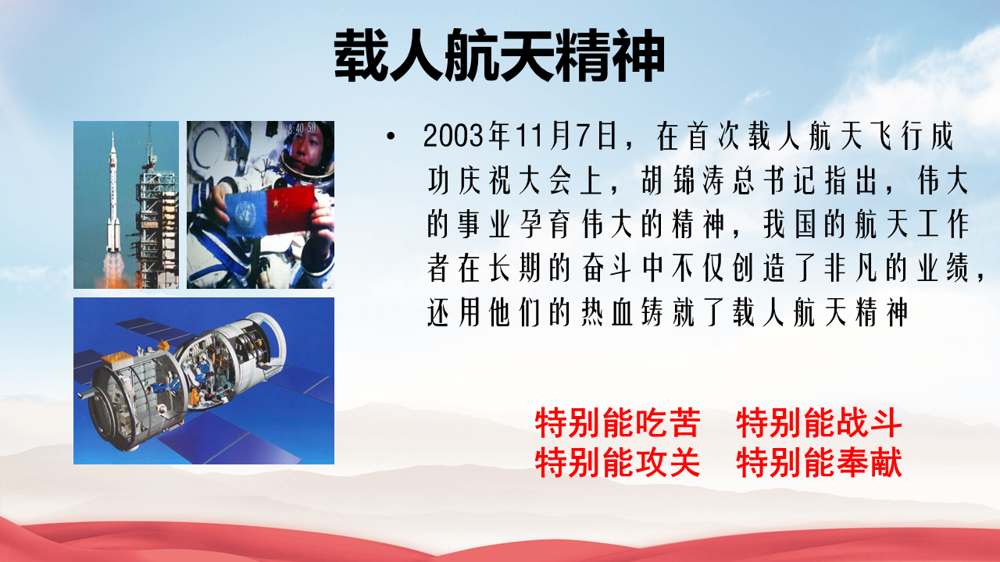
载人航天没有“临场发挥式成功”，只有年复一年的积累和打磨。
发射、对接、出舱、返回，每一个关键时刻都需要团队顶得上。
极端环境中的工程，几乎注定会碰到新问题，攻关能力决定天花板。
看见的是航天员，背后站着的是无数工程师、科研人员和保障团队。
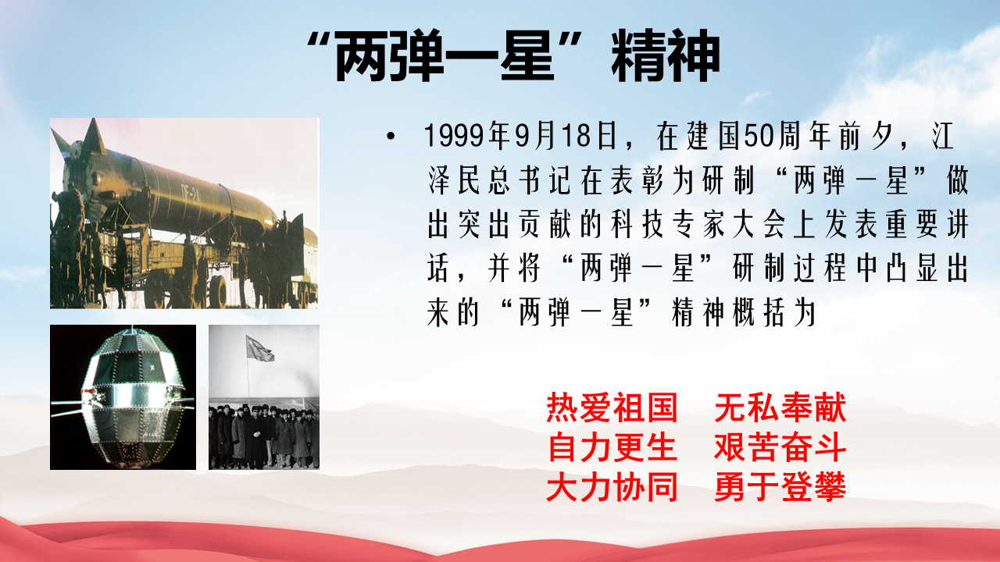
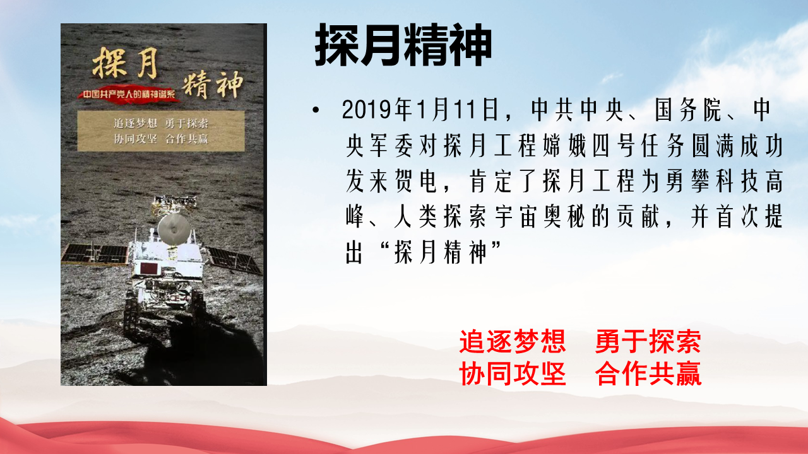
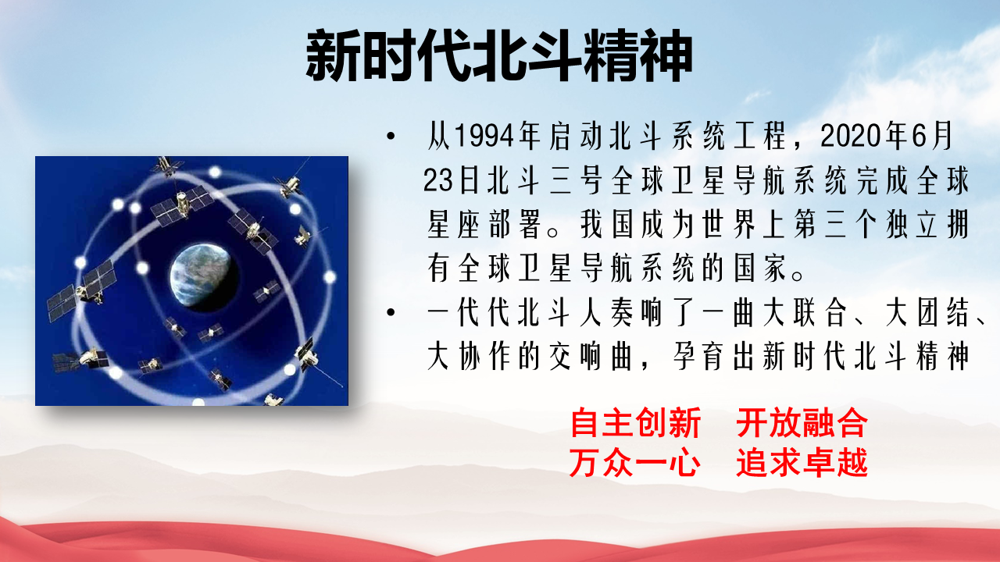
他们是极端环境里的系统操作员，必须靠训练、流程和装备一起工作。
吃饭、睡觉、如厕、锻炼、实验和返回，每一项都需要围绕微重力重做一遍。
从火箭到飞船，从空间站到回收体系，再到团队精神，这是一整套系统工程。
从火箭起飞到返回回收，从航天历史到精神谱系，载人航天展示的是一种把高风险任务长期、稳定、成体系完成的能力。